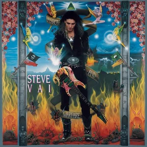
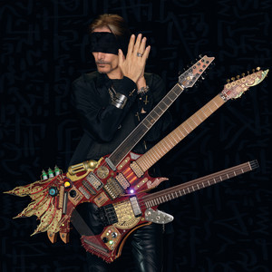
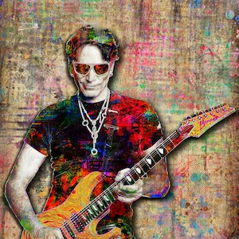
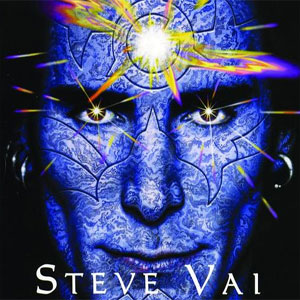

Nuevo álbum en camino Steve Vai anunció que está trabajando en un nuevo álbum, programado para ser lanzado en 2025. El guitarrista reveló que el álbum reflejará su evolución musical y explorará nuevos géneros, fusionando su estilo característico con elementos contemporáneos.
Gira mundial El famoso guitarrista Steve Vai confirmó su gira mundial para 2024. La gira incluirá paradas en ciudades icónicas de Europa y América del Norte, ofreciendo a los fans una oportunidad única de experimentar su virtuosismo en el escenario.
Masterclass en línea Steve Vai ha lanzado una serie de masterclasses en línea, donde comparte sus técnicas de guitarra y procesos creativos. Estas clases están diseñadas tanto para principiantes como para músicos avanzados que buscan mejorar sus habilidades y entender mejor su estilo.
Colaboración con otros artistas Steve Vai colaborará con varios músicos destacados en un proyecto especial. Este nuevo trabajo incluirá artistas de diferentes géneros, prometiendo una mezcla única de sonidos y estilos que sorprenderá a sus seguidores.
Concierto benéfico Steve Vai organizó un concierto benéfico que recaudó fondos para organizaciones de música juvenil. Este evento, que se celebró en su ciudad natal, atrajo a muchos fans y reunió a varios artistas locales para apoyar la causa.
Libro de memorias El guitarrista publicó un libro de memorias titulado "A Journey Through Sound". En este libro, Steve comparte anécdotas de su carrera, experiencias en la industria musical y reflexiones sobre su vida personal, ofreciendo a los fans una visión íntima de su trayectoria.
“Busted” ¡ya está disponible! Es el segundo sencillo del álbum “Vai/Gash”, que se lanzará el 27 de enero de 2023.
Edición Ultra de guitarras Se lanzará una Edición Ultra limitada a 14 unidades con una IBANEZ JEM 77WFP “White Floral Pattern” hecha a mano por el Ibanez Japan Custom Shop. Cada guitarra incluirá un certificado firmado por Steve Vai y un nombre único. Esta es la primera Ibanez Jem hecha en Japón en cinco años. Steve Vai presentará la guitarra en la gira BEAT, que contará con 65 actuaciones en América del Norte de septiembre a diciembre.